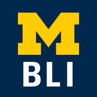
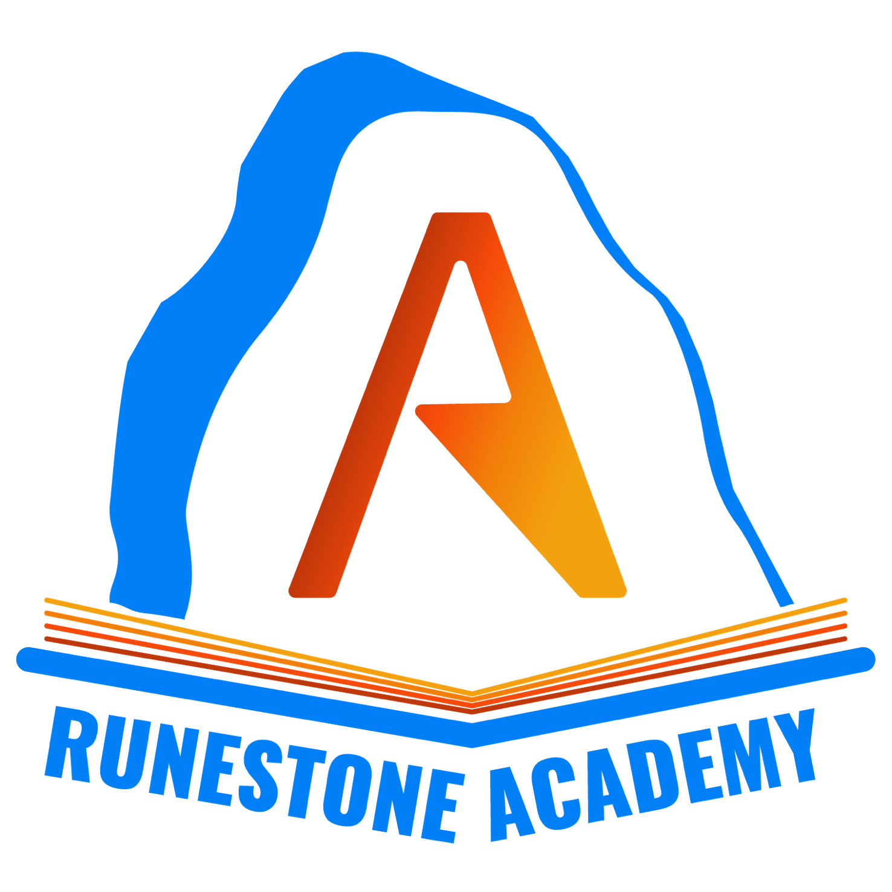

Stryker (2023)
I worked at Stryker as a Data Analytics intern on Customer Analytics, a team in Customer Solutions. During my internship, I focused on 3 main projects. Firstly, I built a Customer Churn Report using Power BI to fill internal reporting gaps pertaining to customer orders, with an emphasis on Sustainability Solutions. Secondly, I presented an analysis report in R to gain insights about an internal Contract AI tool. Finally, I spearheaded a Communications Template Project to be built upon and used by whole division. These templates set a precedent for teams to communicate their projects internally to other teams and externally to stakeholders. I concluded my internship having been classified as a "distinguished performer."

Barger Leadership Institute (2022-Present)
I have been involved with the BLI since October 2022, when I became a member and partipated in a Mindful Leader Retreat. Inspired by the values and community of the BLI, I obtained a working position at the BLI as an Applied Leadership Fellow (ALF) in the Grants and Funding Team. The BLI Grants Program allows current undergraduate students at the univerity to receive grants for leadership-related projects or professional development. As the sole ALF and Grants Specialist on the team, I review applications, communicate with applicants, and work with other teams to promote the BLI as a whole. In addition to working at the BLI, I am also obtaining my certificate in leadership through the BLI's program.
My BLI Profile BLI Grants Program Parsons Problems Research (2023)
For 1 semester, I was a research assistant for Dr. Barbara Ericson of UMSI. This research was funded by the National Science Foundation. As a research assistant, I focused on drafting scaffolded parsons problems for the online Runestone Textbook. The goal with building these unique types of questions is to make computer science education more tangible, particularly for female, marginalized students via Sisters Rise Up.
Read an Article about the Research diiVe (2022)
I was accepted to the virtual cohort for summer 2023 to consult for companies based in South Africa. Many of the mentors and interns were from Africa, but a handful were from Europe, Asia, South America, and of course, all across the US. This was one of the coolest parts about this internship – I got to learn from people with unique backgrounds and perspectives. I began with 2 weeks of training, “Consulting in the New Normal,” to learn about consulting principles, agile mindsets, the South African landscape, and teamwork. Then, I was placed into a team of 6 (5 students and 1 project mentor) to consult for 4WKS Coffee, a sustainable coffee company in Cape Town, and worked as 1 of 2 research leads. My roles involved supervising and delegating client and market research, developing consulting-style presentations, analyzing purchase and marketing data, and overseeing the final report for the client. Our final product was a thorough, agile market sizing solution that would help 4WKS achieve their 2023 sales goals. This internship furthered my interest in using data analysis to solve problems but added the components of stakeholder interaction, iterative project management, and agile leadership.

What the F (2021-Present)
To pursue my creative interests in college, I joined What the F. What the F is a student organization that educates the UMich campus and the community at large on intersectional feminism. We have several projects/initiatives, such as our magazines and educational events, but I’m involved in the Podblog (Podcast + Blog) team. I started as a member of the team in my freshman year and worked with 4 other members at the time. No podcast had been sustained in What the F up until that point, so we worked together to build a new podcast from the ground up. After being a member of the team for a year, I was promoted to Podblog Co-Director, my current position. In this position, I run weekly meetings with my team, delegate podcast/blog tasks, write episode outlines, coordinate recordings, and edit recordings using Adobe Premiere Pro. Additionally, I facilitate the What the F Blog on Wordpress. I contribute to and manage the blog site, including delegating blog posts and increasing website interaction by 20% from 2021 to 2022. In the time I’ve been a part of What the F, I’ve loved educating and learning about intersectional feminism in an inclusive campus environment.